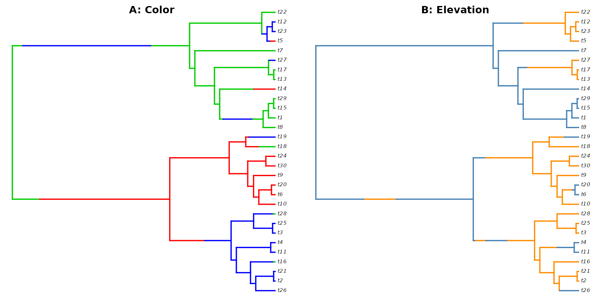
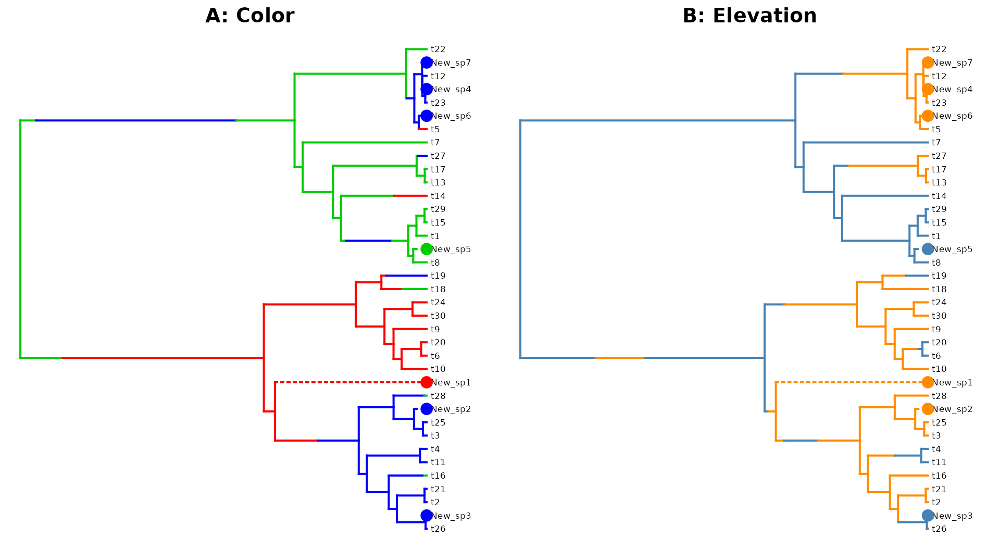
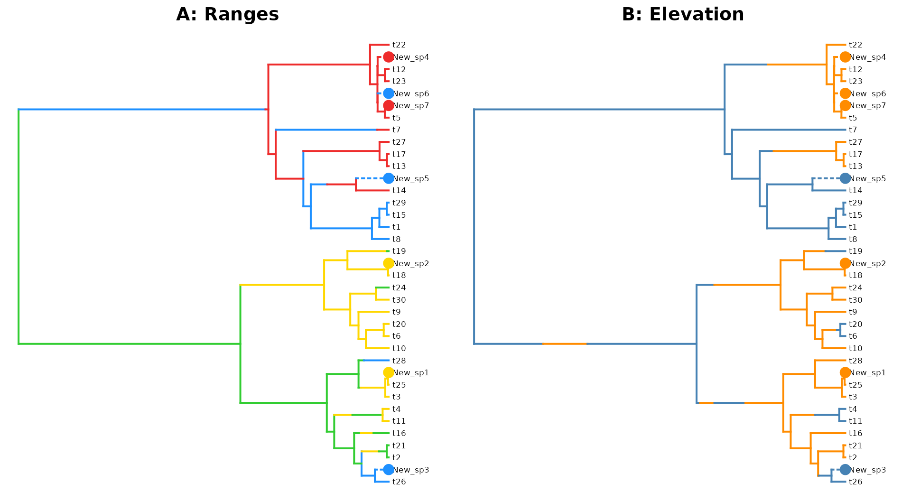

Combine several traits as constraints
Maël Doré
2026-11-27
Source:vignettes/multiple_traits.Rmd
multiple_traits.RmdGrafting can be constrained by species attributes
described by stochastic character maps
(simmap) of the backbone phylogeny. This tutorial explains
how to use several traits at once, e.g., the color and
the elevation of the species, or their biogeographic ranges and their
elevation. The rule is simple: a taxon can only be grafted on
the parts of the branches that are in one of its allowed states, for
every trait. The more traits you use, the narrower the
set of eligible branches is.
In this tutorial, we cover:
- How to provide the maps and the allowed states of several traits.
-
The joint effect of the constraints, checked with
check_grafting_plan(). - Grafting with two categorical traits.
- Grafting with one trait treated as biogeographic ranges and one other trait.
- Several maps per trait.
Other types of data
The principle of species attribute-based constraints is the same for all the types of data. For examples addressing different data types, please refer to:
-
categorical traits (single trait):
vignette("main_workflow"), and the examples ofvignette("graft_missing_taxa"),vignette("graft_missing_clades")andvignette("combine_missing_taxa_and_clades"); -
biogeographic ranges (multi-area states,
treat_states_as_ranges):vignette("biogeographic_data"); -
continuous traits:
vignette("continuous_data"); -
several stochastic maps to account for the
uncertainty in the evolutionary history:
vignette("handle_uncertainty").
To build stochastic maps from your own data, see
vignette("prepare_stochastic_maps").
0/ Data
We use the toy backbone, and the toy stochastic maps of two
categorical traits: a color with three
states ("blue", "green", "red")
and an elevation with two states ("low",
"high"). Both maps have the same tips, topology and
branch lengths as the backbone, as required.
# ------ Toy data ------ #
data(toy_backbone)
data(toy_simmap)
data(toy_simmap_elevation)
data(toy_missing_taxa_list_with_two_traits)
# Group the maps of the traits in a named list: the names are the names of the traits
maps_color_elevation <- list(color = toy_simmap, elevation = toy_simmap_elevation)
color_colors <- c(blue = "blue", green = "green3", red = "red")
elevation_colors <- c(low = "steelblue", high = "darkorange")
# Plot the two maps side by side
par(mfrow = c(1, 2), mar = c(0.5, 0.5, 2, 0.5))
phytools::plotSimmap(toy_simmap, colors = color_colors, fsize = 0.55, ftype = "i", lwd = 2)
title("A: Color", line = -1, cex.main = 1)
phytools::plotSimmap(toy_simmap_elevation, colors = elevation_colors, fsize = 0.55, ftype = "i", lwd = 2)
title("B: Elevation", line = -1, cex.main = 1)
The maps are provided to the grafting functions in a list
with one map per trait:
simmap = list(color = toy_simmap, elevation = toy_simmap_elevation).
Naming the elements is optional (the traits are otherwise called
"trait_1", "trait_2", …), but it makes the
allowed states and the outputs easier to read. Names cannot contain
;, ,, = or |.
1/ Allowed states of several traits
The allowed states are set of states for each trait, provided as with a single trait:
-
for all the taxa, with the global
argument
allowed_states, here as a list with one element per trait, in the order of the maps. Ex:list(c("blue", "green"), "high")restricts the color to blue or green and the elevation to high. -
for each taxon, with the item
allowed_statesof themissing_taxa_list: it has the same structure, and its values supersede the global ones, trait by trait.
A trait with NULL (or an empty vector, or
NA) has no taxon-level value, so the
global value of the trait is used. If there is no global value either,
all the states of the trait are allowed.
Below, we print as a reference the taxon-level values of the 7 missing taxa of the toy list, for each trait:
# ------ Allowed states of two traits for each taxon ------ #
# Rename the loaded missing_taxa_list for simplicity
taxa_two_traits <- toy_missing_taxa_list_with_two_traits
# Helper: extract the taxon-level allowed states of one trait
# Elements of the list are either named after the traits, or in the order of the maps
get_allowed <- function(taxa, trait_name, trait_index)
{
vapply(taxa$allowed_states, function(x)
{
values <- if (is.null(names(x))) x[trait_index][[1]] else x[[trait_name]]
if (is.null(values)) "NULL" else paste(values, collapse = ", ")
}, character(1))
}
# Build and print allowed states as a data.frame
data.frame(Taxon_name = taxa_two_traits$Taxon_name,
Color = get_allowed(taxa_two_traits, "color", 1),
Elevation = get_allowed(taxa_two_traits, "elevation", 2),
row.names = NULL)
#> Taxon_name Color Elevation
#> 1 New_sp1 red NULL
#> 2 New_sp2 NULL NULL
#> 3 New_sp3 NULL NULL
#> 4 New_sp4 blue, green high
#> 5 New_sp5 NULL low
#> 6 New_sp6 NULL NULL
#> 7 New_sp7 NULL high
# NULL will be using the global 'allowed_states' provided to the grafting functionIn a .csv or .xlsx table imported with
import_missing_taxa_list() (see
vignette("format_inputs")), the allowed_states
column uses a compact syntax:
- sets of states for each trait are separated by semicolons, in the order of the maps (the color, then the elevation);
- the states within a trait are separated by commas.
In the missing_taxa_list, $allowed_states
is a list of (named) character vectors (e.g.,
list(color = c("red", "blue"), elevation = "low")). See
Section 2 below for an example of how to modify the list
manually.
For illustration, we print the allowed_states column of
the .csv table used to build the toy list
(taxa_two_traits <- toy_missing_taxa_list_with_two_traits)
loaded above:
# The initial table of the toy list
csv_file <- system.file("extdata", "toy_missing_taxa_with_two_traits.csv", package = "phylograftR")
csv_table <- read.csv(csv_file)
csv_table[, c("Taxon_name", "allowed_states")]
#> Taxon_name allowed_states
#> 1 New_sp1 red;
#> 2 New_sp2
#> 3 New_sp3
#> 4 New_sp4 blue, green;high
#> 5 New_sp5 ;low
#> 6 New_sp6
#> 7 New_sp7 elevation=highThe syntaxes illustrated by the toy table are:
| In the table | Meaning |
|---|---|
red; |
color "red", no taxon-level value for the
elevation (global value used) |
blue, green;high |
color "blue" or "green", and
elevation "high"
|
;low |
no taxon-level value for the color, elevation
"low"
|
elevation=high |
traits named, so the color can be omitted (no taxon-level value) |
| blank | no taxon-level value for any trait: the global
allowed_states is used for both |
The names of the traits must match the names of the
maps in simmap to use the syntax with names.
2/ Joint effect of the constraints
check_grafting_plan() reports, for each taxon, the
share of the branches of its target clade that are
available given all its constraints
(valid_fraction). To see the joint effect
of the two traits, we compare the grafting plan with the constraints on
the color only, on the elevation only,
and on both.
In the toy list, the taxa are mostly constrained by one trait only. To illustrate the joint effect of the traits, we add elevation constraints to three taxa, so that the elevation is a limiting factor for them, and not only the color:
-
New_sp1is allowed in red (as before) and now also in high elevation; -
New_sp3is allowed in the global colors (blue or green) and now also in low elevation; -
New_sp4is now allowed in blue (instead of blue or green) and in high elevation.
We update the list of missing taxa, and use this updated list for the rest of the tutorial.
# ------ Add elevation constraints to three taxa ------ #
taxa_two_traits$allowed_states$New_sp1 <- list(color = "red", elevation = "high")
taxa_two_traits$allowed_states$New_sp3 <- list(color = NULL, elevation = "low") # NULL: the global colors are used
taxa_two_traits$allowed_states$New_sp4 <- list(color = "blue", elevation = "high")
# ------ Valid fraction with the color only, the elevation only, and both ------ #
# Helper: keep the taxon-level allowed states of one trait only
keep_trait <- function(taxa, trait, traits = c("color", "elevation"))
{
taxa$allowed_states <- lapply(taxa$allowed_states, function(x)
{
if (is.null(x)) return(NULL)
out <- setNames(vector("list", length(traits)), traits)
for (i in seq_along(x))
{
name <- if (is.null(names(x))) traits[i] else names(x)[i]
out[name] <- list(x[[i]])
}
out[setdiff(traits, trait)] <- list(NULL)
if (all(vapply(out, is.null, logical(1)))) NULL else out
})
taxa
}
# Set the global allowed states: blue or green for the color, no restriction for the elevation
global_allowed_states <- list(c("blue", "green"), NULL)
# Check grafting plan with colors only
plan_colors <- check_grafting_plan(phy = toy_backbone,
missing_taxa_list = keep_trait(taxa_two_traits, "color"),
simmap = maps_color_elevation,
allowed_states = global_allowed_states, verbose = FALSE)
# Check grafting plan with elevation only
plan_elevation <- check_grafting_plan(phy = toy_backbone,
missing_taxa_list = keep_trait(taxa_two_traits, "elevation"),
simmap = maps_color_elevation,
allowed_states = list(NULL, NULL), verbose = FALSE)
# Check grafting plan with both
plan_both <- check_grafting_plan(phy = toy_backbone,
missing_taxa_list = taxa_two_traits,
simmap = maps_color_elevation,
allowed_states = global_allowed_states, verbose = FALSE)
# Extract the valid fractions for each plan
valid_fractions <- data.frame(Taxon_name = taxa_two_traits$Taxon_name,
Color_only = plan_colors$valid_fraction,
Elevation_only = plan_elevation$valid_fraction,
Both = plan_both$valid_fraction)
valid_fractions[, -1] <- round(valid_fractions[, -1], 2)
valid_fractions
#> Taxon_name Color_only Elevation_only Both
#> 1 New_sp1 0.57 0.48 0.14
#> 2 New_sp2 0.31 1.00 0.31
#> 3 New_sp3 0.52 0.20 0.11
#> 4 New_sp4 0.31 0.23 0.04
#> 5 New_sp5 0.91 1.00 0.91
#> 6 New_sp6 0.41 1.00 0.41
#> 7 New_sp7 0.75 1.00 0.75The traits do not constrain all the taxa in the same way:
- For
New_sp2,New_sp5,New_sp6andNew_sp7, the color is the limiting constraint and the valid fraction with both traits is the one of the color. Their elevation is not restrictive (Elevation_onlyof 1): either they have no elevation constraint (New_sp2,New_sp6) or all their eligible branches are already in the allowed elevation (New_sp5,New_sp7: e.g., once the excluded subcladeGen_1is removed, all the branches left forNew_sp5are in low elevation). - For
New_sp1,New_sp3andNew_sp4, the traits interact: both constrain the grafting to a restricted portion of available branches, and the branch pieces that match both constraints are much rarer than those matching each of them (14%, 11% and 4% of branch length, respectively), since the states of the two traits are not aligned along the branches (see the simmaps in Section 0 above).
In general, the more traits are combined, the more likely a
taxon has few or no eligible branches. Therefore, it is
recommended to use check_grafting_plan() to evaluate the
feasibility of the grafting plan beforehand.
Here, the valid fraction of New_sp4 is below the
threshold min_valid_fraction (10% by default), which
triggers a warning at grafting (see
vignette("check_grafting")). Nonetheless, the grafting plan
is still feasible.
# The plan flags New_sp4 for its low valid fraction
plan_both[plan_both$Taxon_name == "New_sp4", c("Taxon_name", "valid_fraction", "feasible", "cause")]
#> Taxon_name valid_fraction feasible cause
#> 4 New_sp4 0.04108687 TRUE low_valid_fraction
# Inspect overall feasibility
plan_both[, c("Taxon_name", "feasible")]
#> Taxon_name feasible
#> 1 New_sp1 TRUE
#> 2 New_sp2 TRUE
#> 3 New_sp3 TRUE
#> 4 New_sp4 TRUE
#> 5 New_sp5 TRUE
#> 6 New_sp6 TRUE
#> 7 New_sp7 TRUE3/ Graft with two categorical traits
We graft the 7 taxa with the global
allowed_states = list(c("blue", "green"), NULL). The
grafting warns about New_sp4, as anticipated by the plan in
Section 2: allowed branches cover only about 4.8% of the time
window of its divergence ages, so its age is drawn within a narrow
window, and may need to be redrawn many times until a suitable
divergence ages is found.
# ------ Graft with two categorical traits ------ #
grafted_two_traits <- graft_missing_taxa(phy = toy_backbone, missing_taxa_list = taxa_two_traits,
simmap = maps_color_elevation,
allowed_states = list(c("blue", "green"), NULL),
verbose = FALSE, seed = 4)
#> Warning: 1 taxa have less than 10% of the time window of their divergence ages covered by available branches in their allowed states ('min_valid_fraction' = 0.1): their divergence ages will be concentrated on a narrow time window, or many ages will need to be redrawn.
#> - New_sp4 (target clade tips: t8, t22; 4.86% in allowed states)
# The output has one updated simmap per trait, named after the traits
names(grafted_two_traits$simmap)
#> [1] "color" "elevation"In each updated simmap, the grafted branches are entirely in the state of each trait at the point where they were grafted: each trait is inherited from the lineage the taxon was grafted on. We plot the two updated maps, with the grafted tips marked with a point in the color of their state:
# ------ Compare the updated maps of the two traits ------ #
# Helper: plot the updated simmap of one trait of a grafted phylogeny
plot_trait <- function(phy_grafted, trait, colors, main)
{
plot_grafted(phy_grafted, which = "edges", trait = trait, simmap_colors = colors, fsize = 0.55, main = main)
grafted_tips <- which(phy_grafted$grafted_tips)
tip_states <- phytools::getStates(phy_grafted$simmap[[trait]], type = "tips")[phy_grafted$tip.label[grafted_tips]]
ape::tiplabels(tip = grafted_tips, pch = 19, cex = 1.5, col = colors[tip_states])
}
par(mfrow = c(1, 2), mar = c(0.5, 0.5, 2, 0.5))
plot_trait(grafted_two_traits, trait = "color", colors = color_colors, main = "A: Color")
plot_trait(grafted_two_traits, trait = "elevation", colors = elevation_colors, main = "B: Elevation")
Using extract_grafting_info(), we summarize the state
inherited by each taxon for each trait, next to its allowed states:
# ------ States of the grafted taxa ------ #
info_two_traits <- extract_grafting_info(grafted_two_traits, missing_taxa_list = taxa_two_traits)
# Helper: allowed states of a trait for each taxon, taxon-level value or else global value
allowed_of_trait <- function(taxa, trait_name, trait_index, global)
{
values <- get_allowed(taxa, trait_name, trait_index)
ifelse(values == "NULL", if (is.null(global)) "all" else paste(global, collapse = ", "), values)
}
data.frame(Taxon_name = info_two_traits$Taxon_name,
Allowed_color = allowed_of_trait(taxa_two_traits, "color", 1, c("blue", "green")),
Color = info_two_traits$tip_state_color,
Allowed_elevation = allowed_of_trait(taxa_two_traits, "elevation", 2, NULL),
Elevation = info_two_traits$tip_state_elevation,
row.names = NULL)
#> Taxon_name Allowed_color Color Allowed_elevation Elevation
#> 1 New_sp1 red red high high
#> 2 New_sp2 blue, green blue all high
#> 3 New_sp3 blue, green blue low low
#> 4 New_sp4 blue blue high high
#> 5 New_sp5 blue, green green low low
#> 6 New_sp6 blue, green blue all high
#> 7 New_sp7 blue, green blue high highEach taxon has a state in its allowed states for each
trait. The a posteriori check of
check_grafting_constraints() reports it for each
trait (states_ok_color,
states_ok_elevation) and overall
(states_ok):
# ------ A posteriori check ------ #
constraints_two_traits <- check_grafting_constraints(phy_grafted = grafted_two_traits, phy_backbone = toy_backbone,
missing_taxa_list = taxa_two_traits,
allowed_states = list(c("blue", "green"), NULL),
use_excluded_subclades = FALSE, verbose = FALSE)
constraints_two_traits[, c("Taxon_name", "states_ok_color", "states_ok_elevation", "states_ok")]
#> Taxon_name states_ok_color states_ok_elevation states_ok
#> New_sp1 New_sp1 TRUE TRUE TRUE
#> New_sp2 New_sp2 TRUE TRUE TRUE
#> New_sp3 New_sp3 TRUE TRUE TRUE
#> New_sp4 New_sp4 TRUE TRUE TRUE
#> New_sp5 New_sp5 TRUE TRUE TRUE
#> New_sp6 New_sp6 TRUE TRUE TRUE
#> New_sp7 New_sp7 TRUE TRUE TRUE4/ Graft with one trait treated as ranges
One of the traits can be treated as biogeographic
ranges (see vignette("biogeographic_data")), and
combined with any number of other traits.
Here, we combine the toy biogeographic ranges ("A",
"B", "AB", "BC") and the
elevation:
# ------ Toy data: ranges and elevation ------ #
data(toy_simmap_ranges)
data(toy_missing_taxa_list_with_ranges_and_elevation)
# Rename the missing taxa list for consistency
taxa_ranges_elevation <- toy_missing_taxa_list_with_ranges_and_elevation
# Combine simmap for biogeographic ranges and elevation
maps_ranges_elevation <- list(biogeo = toy_simmap_ranges, elevation = toy_simmap_elevation)
# Print in a data.frame the taxon-level allowed states of the two traits
data.frame(Taxon_name = taxa_ranges_elevation$Taxon_name,
Ranges = get_allowed(taxa_ranges_elevation, "biogeo", 1),
Elevation = get_allowed(taxa_ranges_elevation, "elevation", 2),
row.names = NULL)
#> Taxon_name Ranges Elevation
#> 1 New_sp1 A high
#> 2 New_sp2 NULL NULL
#> 3 New_sp3 NULL NULL
#> 4 New_sp4 B, BC NULL
#> 5 New_sp5 NULL low
#> 6 New_sp6 NULL NULL
#> 7 New_sp7 A, BC high
# NULL will be using the global 'allowed_states' provided to the grafting functionThe argument treat_states_as_ranges is a logical
vector with one value per trait, with at most one
TRUE that identifies the range
trait. It is either positional
(c(TRUE, FALSE): the first trait is the range trait) or
named after the traits, in any order
(c(biogeo = TRUE, elevation = FALSE)).
- The range trait follows the logic of range
matching: a taxon allowed in
"A"can be grafted on branch pieces in"A","AB"or"ABC", and inherits one of its allowed range. - The other traits are matched exactly, and are inherited as they are at the point where the taxon is grafted.
Only one trait can be treated as ranges, to prevent an inflation of the number of combined states to consider.
Here, we graft the taxa, with the global allowed ranges
"A" or "B", and no restriction on the
elevation:
# ------ Graft with ranges and elevation ------ #
grafted_ranges_elevation <- graft_missing_taxa(phy = toy_backbone,
missing_taxa_list = taxa_ranges_elevation,
simmap = maps_ranges_elevation,
allowed_states = list(c("A", "B"), NULL),
treat_states_as_ranges = c(biogeo = TRUE, elevation = FALSE),
verbose = FALSE, seed = 9)
# ------ Compare the updated maps of the two traits ------ #
range_colors <- c(A = "gold", B = "dodgerblue", AB = "limegreen", BC = "firebrick2")
par(mfrow = c(1, 2), mar = c(0.5, 0.5, 2, 0.5))
plot_trait(grafted_ranges_elevation, trait = "biogeo", colors = range_colors, main = "A: Ranges")
plot_trait(grafted_ranges_elevation, trait = "elevation", colors = elevation_colors, main = "B: Elevation")
Using extract_grafting_info(), we summarize, for each
taxon, the state of each trait at the point where it was grafted
(parent_state_*) and the state it inherited
(tip_state_*):
# ------ States at grafting and inherited states ------ #
info_ranges_elevation <- extract_grafting_info(grafted_ranges_elevation, missing_taxa_list = taxa_ranges_elevation)
info_ranges_elevation[, c("Taxon_name", "parent_state_biogeo", "tip_state_biogeo",
"parent_state_elevation", "tip_state_elevation")]
#> Taxon_name parent_state_biogeo tip_state_biogeo parent_state_elevation
#> 1 New_sp1 A A high
#> 2 New_sp2 A A high
#> 3 New_sp3 B B low
#> 4 New_sp4 BC BC high
#> 5 New_sp5 BC B low
#> 6 New_sp6 BC B high
#> 7 New_sp7 BC BC high
#> tip_state_elevation
#> 1 high
#> 2 high
#> 3 low
#> 4 high
#> 5 low
#> 6 high
#> 7 highThe elevation is always inherited as it is, whereas the range
can be smaller than the range of the branch, which represents
subset sympatric speciation events (e.g.,
(AB) -> (AB), (A)).
The a posteriori check verifies that the inherited tip range is among
the allowed_states (states_ok_biogeo and
states_ok_elevation). It also verifies, for the range
trait, that the inherited range is contained in the range of its
parent branch (ranges_ok):
# ------ A posteriori check ------ #
constraints_ranges_elevation <- check_grafting_constraints(phy_grafted = grafted_ranges_elevation, phy_backbone = toy_backbone,
missing_taxa_list = taxa_ranges_elevation,
allowed_states = list(c("A", "B"), NULL),
treat_states_as_ranges = c(biogeo = TRUE, elevation = FALSE),
use_excluded_subclades = FALSE, verbose = FALSE)
constraints_ranges_elevation[, c("Taxon_name", "states_ok_biogeo", "states_ok_elevation", "ranges_ok", "ok")]
#> Taxon_name states_ok_biogeo states_ok_elevation ranges_ok ok
#> New_sp1 New_sp1 TRUE TRUE TRUE TRUE
#> New_sp2 New_sp2 TRUE TRUE TRUE TRUE
#> New_sp3 New_sp3 TRUE TRUE TRUE TRUE
#> New_sp4 New_sp4 TRUE TRUE TRUE TRUE
#> New_sp5 New_sp5 TRUE TRUE TRUE TRUE
#> New_sp6 New_sp6 TRUE TRUE TRUE TRUE
#> New_sp7 New_sp7 TRUE TRUE TRUE TRUE5/ Several maps per trait
Each trait can be described by several stochastic
maps (a "multiSimmap"), to account for the
uncertainty in its evolutionary history (see
vignette("handle_uncertainty")). The maps of the traits are
paired: the grafting is run with the map 1 of every
trait, then with the map 2 of every trait, and so on. All the
traits must therefore have the same number of maps.
This also applies to a trait described by a single
simmap: it cannot be mixed with a
trait described by a multiSimmap, and such a list is
refused. You can always duplicate the single
simmap in the list, so that it pairs with all the
maps of the multiSimmap of the other trait. For instance,
toy_multiSimmap_elevation[rep(1, 10)] repeats the map 1 of
a multiSimmap 10 times and keeps the class
"multiSimmap", which is essential to tell phylograftR that
this set of maps are inferred for a unique trait (a list of
simmaps, without the multiSimmap class, would
be read as 10 unique maps for 10 different traits).
We quickly generate 10 stochastic maps for each
trait with phytools::make.simmap(), from the states of the
tips of the toy maps (equal-rates model). Of course, in a real analysis,
the maps would be built from your own data (see
vignette("prepare_stochastic_maps")).
# ------ 10 stochastic maps for the color and for the elevation ------ #
# States of the tips of each trait
tip_colors <- phytools::getStates(toy_simmap, type = "tips")
tip_elevations <- phytools::getStates(toy_simmap_elevation, type = "tips")
# Simulate 10 stochastic maps per trait
set.seed(33)
multi_color <- phytools::make.simmap(toy_backbone, tip_colors, model = "ER", nsim = 10, message = FALSE)
multi_elevation <- phytools::make.simmap(toy_backbone, tip_elevations, model = "ER", nsim = 10, message = FALSE)
# Group them in a named list, as with a single map per trait
multi_maps <- list(color = multi_color, elevation = multi_elevation)With random maps, the constraints can differ a lot from one map to
the next. check_grafting_plan() summarizes the
valid fraction of each taxon across the pairs of maps
(minimum, mean and maximum). It also reports the maps with no available
branch for a taxon (n_maps_infeasible), which would stop
the grafting:
# ------ Grafting plan across the 10 pairs of maps ------ #
plan_paired <- check_grafting_plan(phy = toy_backbone, missing_taxa_list = taxa_two_traits,
simmap = multi_maps,
allowed_states = list(c("blue", "green"), NULL), verbose = FALSE)
plan_paired[, c("Taxon_name", "valid_fraction_min", "valid_fraction_mean", "valid_fraction_max", "n_maps_infeasible", "feasible")]
#> Taxon_name valid_fraction_min valid_fraction_mean valid_fraction_max
#> 1 New_sp1 0.004298103 0.1067638 0.4359657
#> 2 New_sp2 0.422849278 0.5879249 0.7761303
#> 3 New_sp3 0.042590491 0.1864553 0.3814805
#> 4 New_sp4 0.062828303 0.1426612 0.2321527
#> 5 New_sp5 0.410359896 0.6267012 0.8664758
#> 6 New_sp6 0.178834499 0.5189147 0.9898609
#> 7 New_sp7 0.649172440 0.7944653 0.9956683
#> n_maps_infeasible feasible
#> 1 0 TRUE
#> 2 0 TRUE
#> 3 0 TRUE
#> 4 0 TRUE
#> 5 0 TRUE
#> 6 0 TRUE
#> 7 0 TRUEAs in Section 2, the strict constraints leave few eligible
branches for some taxa (e.g., New_sp1), especially in some
maps.
Here, we graft with method = "uniform", which only
requires an available branch in each map as the age of the grafting is
not drawn from a diversification model. This is a solution when
constrains are too strict to be easily realized under diversification
models, but at the cost of ignoring diversification dynamics, which tend
to create a bias towards older divergence ages (see Section 2
vignette("graft_missing_taxa")). It is not the
recommended use of phylograftR, but is used here only as
illustration.
We also silence the warnings about the low valid fractions already
shown above by setting min_valid_fraction = 0, i.e.,
warnings are sent only if no branch pieces are available at all.
We generate 5 simulations for each pair of maps:
# ------ Graft with paired maps ------ #
grafted_paired <- graft_missing_taxa(phy = toy_backbone, missing_taxa_list = taxa_two_traits,
simmap = multi_maps,
allowed_states = list(c("blue", "green"), NULL),
method = "uniform", min_valid_fraction = 0,
nb_simulations = 5, seed = 1, verbose = FALSE)The output is a list with one element per pair of
maps ("map_1", "map_2", …), each
being a multiPhylo of the 5 grafted
phylogenies obtained with this pair:
# ------ Structure of the output ------ #
# One element per pair of maps
length(grafted_paired)
#> [1] 10
names(grafted_paired)
#> [1] "map_1" "map_2" "map_3" "map_4" "map_5" "map_6" "map_7" "map_8"
#> [9] "map_9" "map_10"
# Each element contains 5 grafted phylogenies
sapply(grafted_paired, length)
#> map_1 map_2 map_3 map_4 map_5 map_6 map_7 map_8 map_9 map_10
#> 5 5 5 5 5 5 5 5 5 5
# Total number of grafted phylogenies
sum(sapply(grafted_paired, length))
#> [1] 50Each grafted phylogeny comes with one updated simmap per trait, derived from the pair of maps it was grafted on:
# ------ Updated simmaps of a grafted phylogeny ------ #
# First phylogeny of the first pair of maps
phy_1_1 <- grafted_paired$map_1[[1]]
names(phy_1_1$simmap)
#> [1] "color" "elevation"
class(phy_1_1$simmap$color)
#> [1] "simmap" "phylo"
class(phy_1_1$simmap$elevation)
#> [1] "simmap" "phylo"Note that pairing the map 1 of a trait with the map 1 of the others is a choice of the analysis: the maps of two traits are usually built independently, so any pairing is arbitrary and does not represent a correlated evolution of the traits. If you want to cross every pair of maps instead, you can duplicate the maps in a dedicated fashion so that each map of the first trait meets each map of the second trait. With 10 maps per trait, repeat each map of the color 10 times in a row (map 1 x 10, then map 2 x 10, …), and repeat the whole series of maps of the elevation 10 times (maps 1 to 10, then again 1 to 10, …):
# ------ Not run: cross all the pairs of maps ------ #
# Each map of the color repeated 10 times in a row: c1, c1, ..., c2, c2, ..., c10
crossed_color <- multi_color[rep(1:10, each = 10)]
# The 10 maps of the elevation repeated 10 times: e1, ..., e10, e1, ..., e10, ...
crossed_elevation <- multi_elevation[rep(1:10, times = 10)]
# 100 pairs of maps = all the combinations of the 10 maps of each trait
grafted_crossed <- graft_missing_taxa(phy = toy_backbone, missing_taxa_list = taxa_two_traits,
simmap = list(color = crossed_color, elevation = crossed_elevation),
allowed_states = list(c("blue", "green"), NULL),
nb_simulations = 5, seed = 1)Beware of the rapid inflation of the number of grafted phylogenies!
Crossing all the maps multiplies the numbers of maps of the traits: here, 10 x 10 pairs of maps x 5 simulations = 500 phylogenies, instead of 50 with paired maps. In practice, 100 to 1000 stochastic maps per trait are typically used to account for the uncertainty in the evolutionary history. Crossing 100 maps per trait with 10 simulations each already gives 100 x 100 x 10 = 100,000 phylogenies, and crossing 1000 maps per trait up to 1,000,000 pairs of maps (10,000,000 phylogenies with 10 simulations each). Each additional trait multiplies this number again. Crossing every pair is therefore only realistic with a small number of maps, whereas pairing the maps (and a subset of them if needed) keeps the number of runs manageable.
Next steps
Now that you know how to use several traits as constraints, you may be interested in:
- exploring options to graft missing taxa,
missing clades, or both types:
vignette("graft_missing_taxa"),vignette("graft_missing_clades")andvignette("combine_missing_taxa_and_clades"); - using biogeographic ranges:
vignette("biogeographic_data"); - using continuous traits:
vignette("continuous_data"); - handling uncertainty with several simulations and
stochastic maps, and ensuring the reproducibility of
the runs with the seed system:
vignette("handle_uncertainty"); - speeding up your runs by using parallel
computation:
vignette("parallel_grafting").